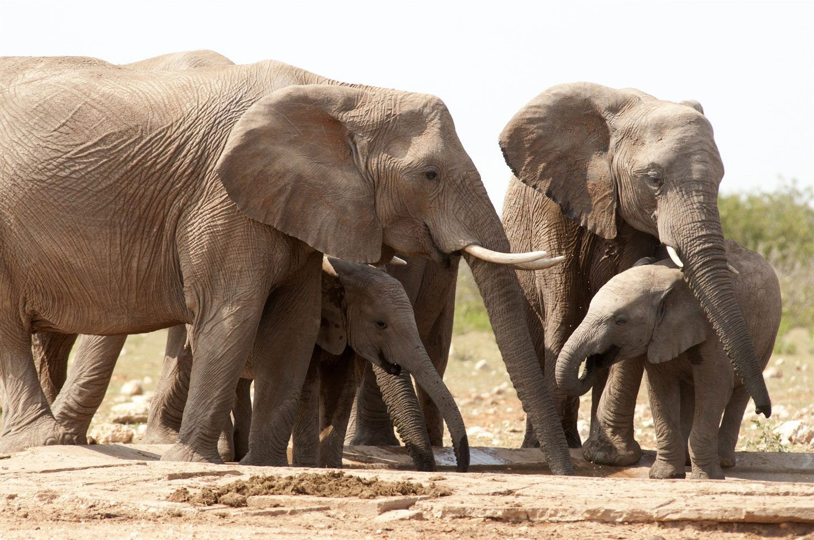

La migración, la prevención de los conflictos, el desarrollo sostenible y la reforma de la ONU serán las prioridades de la 72da. sesión de la Asamblea General para el 2018, indicó el presidente del órgano, [...]

En 2018 la Asamblea General se enfocará en la migración, la juventud y el desarrollo sostenible

El mundo se compromete a promover el desarrollo sostenible en las montañas, en su Día Internacional.
Unos 60 países y más de 200 organizaciones de la sociedad civil se comprometieron este lunes en el Día Internacional de las Montañas, a fortalecer a las personas que las habitan y preparar eficazmente su [...]

Día Mundial del Suelo: Las técnicas nucleares ayudan al cuidado de la superficie terrestre
En conmemoración del Día Mundial del Suelo , Naciones Unidas quiso recordar hoy la importancia de mantener la superficie terrestre, ya que es un recurso finito y no renovable que se encuentra en peligro alrededor [...]
«Nuestro objetivo colectivo debe ser un planeta libre de contaminación»
La degradación ambiental es responsable de casi una de cada cuatro muertes -12,6 millones de personas al año-, así como de una variedad de problemas de salud y la destrucción generalizada de ecosistemas vitales, según [...]

Iniciativas verdes de África reciben premios de la ONU por su innovación
Bolsos hechos con cáscaras de banano, bancos escolares fabricados a partir de residuos plásticos, un programa para mejorar la calidad de vida de los granjeros de café y una iniciativa para salvar a los gorilas [...]

Lanzan nueva iniciativa para frenar la caza insostenible de fauna silvestre
La FAO lanzó este martes una iniciativa que busca ayudar a países de África, el Caribe y el Pacífico a frenar la caza insostenible de fauna silvestre, conservar su riqueza natural y fortalecer los medios [...]